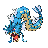
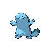

the skill testing framework · takeaway
What a clear best answer tests
one answer, every time
Nothing to decide

One option wins in every situation. Players find it, then stop deciding: the other options are decoration.
Thunderbolt into Gyarados. The 2025 shot chart: rim and arc, empty midrange.
one answer per situation

A knowledge test

The answer changes, but each situation still has one. The skill is reading the situation and recalling the answer.
A water team: know that Quagsire is Ground and takes nothing from Thunderbolt.
the answer depends on the other side
A decision test
⇄
Two or more options stay worth considering, and the best one moves when the opponent or the defence moves.
A trainer who switches to counter your obvious move. Graded payoffs: shoot where the defence is not.
Ask yourself: am I making something with a clear best answer? Sometimes that is the test you want. If you meant to test decisions, make the payoff depend on the situation, or on what the other side does.